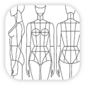

Experience

Prêt-à-Template · iOS Developer
2023 — Now
- Designed and shipped a CloudKit-backed social feed in Prêt-à-Makeup using SwiftUI and MVVM, a new engagement surface that drove 3,400+ interactions from 1,200+ unique users in its first 4 weeks.
- Built an AWS content delivery pipeline (S3, Lambda, CloudFront, API Gateway) that cut app setup time by 85%+ and let 2,000+ daily users load content in under a minute.
- Architected a CI/CD pipeline with Xcode Cloud, automating iOS releases so the product team could test builds on their own.
- Developed an internal content management platform integrating CloudKit and AWS across 2 production apps, cutting bundled content by 50% through on-demand delivery.
Liber · Backend Intern
2022 — 2023
- Built backend services in Go using Factory and Service patterns, integrating PostgreSQL, RabbitMQ, and CSV processing pipelines.
- Provisioned infrastructure as code with Terraform and AWS (Lambda, ECS, Secrets Manager), and designed GitLab CI/CD pipelines as the team's dedicated DevOps engineer.
- Built a testing suite across Python and Go services (unit and end-to-end), improving coverage by ~25%.
Bava · DevOps Intern
2022
- Built infrastructure automation with Terraform and AWS (S3, ECS, Lambda, IAM, Secrets Manager), deploying resources as code across environments.
- Built Datadog dashboards to monitor service health, track errors, and analyze logs across production systems.
- Maintained and improved GitLab CI/CD pipelines, adding linting automation.
UFRGS · Undergraduate Research Fellow (CNPq)
2021 — 2022
- Developed a full-stack MVP with Flutter and PostgreSQL as part of a CNPq-funded entrepreneurship research scholarship.
- Ran field research with 117+ survey responses to validate product assumptions and guide development.
Porto Alegre, Brazil · © 2026 Leonardo Bilhalva